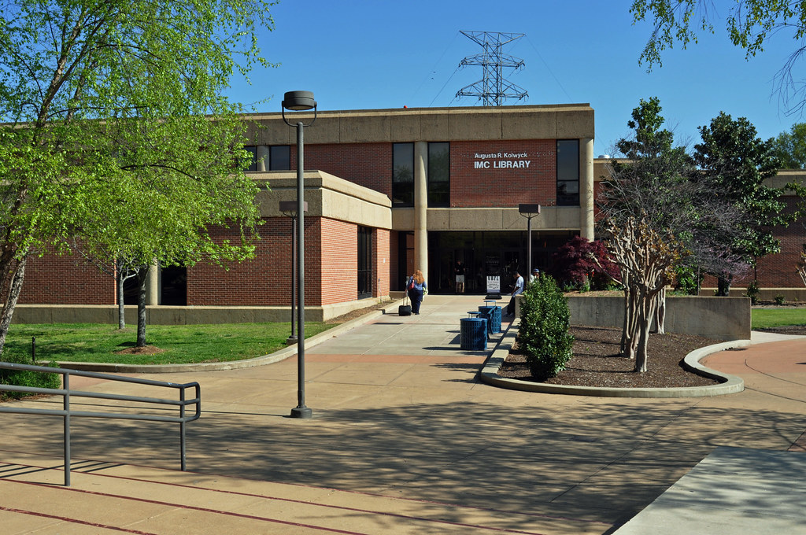
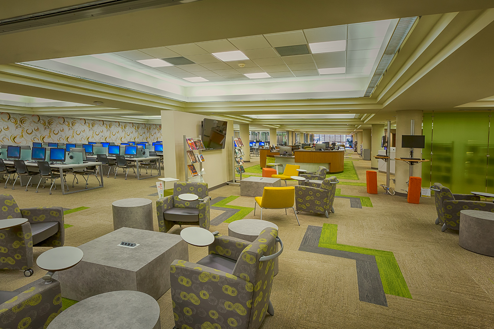

the library
The library is definitely the quietest place on campus. It's good for studying here with the way it's set up as well. I like how the tables with multiple seats are all separated between each other so you can concentrate on your own work without being distracted that someone is sitting near you. There's even outlets to charge your computer if you have the cable. I think most people try to sit as far away from each other as they can anyway. It doesn't seem to get crowded much here, but I don't go here often anyway, so I'm not sure.
good uses for the library:
- Studying
- Reading
- Maybe Napping
- Using the Computer for Assignments
parts i haven't seen
I've never bothered to really walk through the whole building personally. So I've never actually been to the back of the library(2nd photo pointed in that direction). When I glanced, the first thing I noticed was what looked like study rooms. I was wondering who uses them exactly, and I think it's most likely students. I've been tutored before and it never takes place there, and instead in different rooms. Maybe it's where some may meet for group projects or one person just studying alone.
